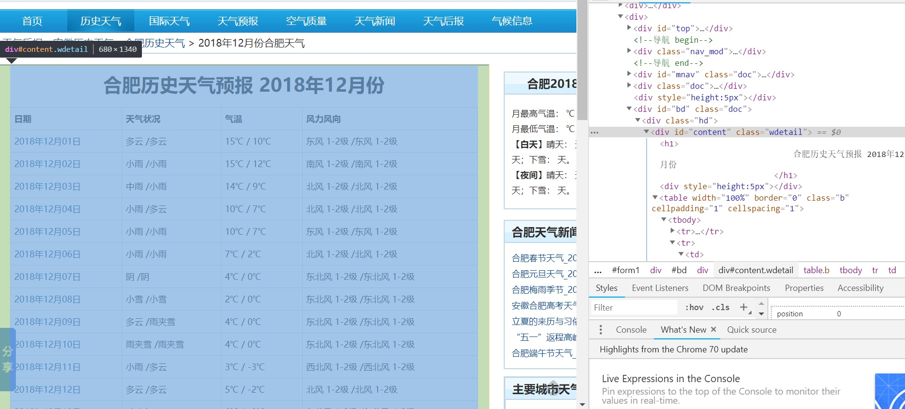
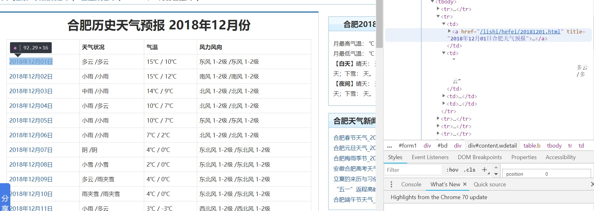
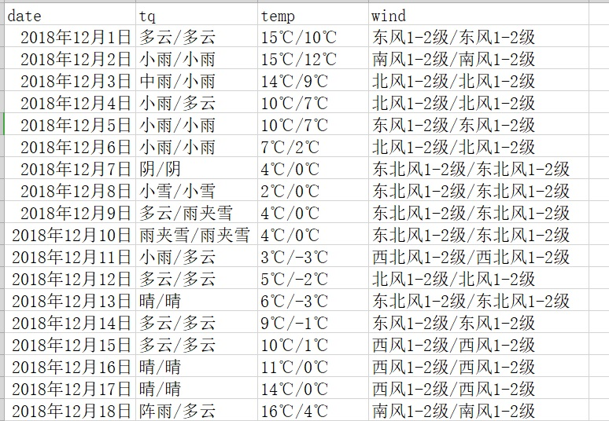

最近项目需要对合肥市历史天气数据进行爬取，分析了几个天气数据网站，最终选择天气后报网站 . 将实现过程遇到的问题以及下来，供以后参考。
步骤分析 这里我使用的是Python中的requests库BeautifulSoup库进行爬取，自己在实现的过程中主要可分为以下几个大步骤。
1.熟悉requests库和BeautifulSoup的使用： requests主要是与HTTP请求相关的库，在我们的爬虫中主要用于请求获取网页很HTML内容，新手可以参考文档：http://docs.python-requests.org/zh_CN/latest/user/quickstart.html .
BeautifulSoup库是一个能够从HTML文件中提取数据的Python库，由于我们获取的HTML文件包含整个网页内容，我们还需要定位到我们所需要获取的数据部分，BeautifulSoup提供了包括find和find_all等一系列强大的函数帮助我们快速搜素和定位，入门教程：https://www.crummy.com/software/BeautifulSoup/bs4/doc/index.zh.html .
2.分析网页结构 第二步我觉得是要在打开我们要爬取的网页，使用谷歌浏览器等开发者工具快速定位到我们所需要的HTML内容：

3.存储数据 数据获取到后需要将数据以结构化的方式存储起来，这里可以CSV文件或存储到数据库。存储的时候还需要注意的是需要提前进行预处理，避免数据有空格、换行符等特殊字符或出行中文乱码问题。
实现过程 获取网页内容 代码如下：
1 2 3 4 5 6 7 8 9 def get_soup (url) : try : r = requests.get(url, timeout=30 ) r.raise_for_status() soup = BeautifulSoup(r.text, 'lxml' ) return soup except HTTPError: return "Request Error"
注意点： 1.若该网站编码不是utf8，而是其他的，需要r.encoding设置成对应的编码；2.最好进行异常处理，否则爬虫程序可能会中断。
解析网页内容，得到数据 1 2 3 4 5 6 7 8 9 10 11 def get_data () : soup = get_soup(url) all_weather = soup.find('div' , class_="wdetail" ).find('table' ).find_all("tr" ) data = list() for tr in all_weather[1 :]: td_li = tr.find_all("td" ) for td in td_li: s = td.get_text() data.append("" .join(s.split())) res = np.array(data).reshape(-1 , 4 ) return res
因为天气数据包裹在table的tr中，每个tr为一行，每一行又有4列td（日期，天气状况，气温，风力风向）

上述我把整个数据列表以4列为一组进行reshape，方便后面数据的存储，然后还将数据中空格换行符等剔除了:"".join(s.split())。注意在解析的过程中最好多几层搜素，不要直接就得到最里面的元素，不然可能会解析不到或冲突，如soup.find('div', class_="wdetail").find('table').find_all("tr")而不是直接soup.find_all("tr")
数据存储 最后就是数据的存储了，这里实现了存储到CSV文件和MySQL两种方式：
1.CSV文件
1 2 3 4 5 6 7 def saveTocsv (data, fileName) : ''' 将天气数据保存至csv文件 ''' result_weather = pd.DataFrame(data, columns=['date' ,'tq' ,'temp' ,'wind' ]) result_weather.to_csv(fileName, index=False , encoding='gbk' ) print('Save all weather success!' )
2.存储到MySQL
1 2 3 4 5 6 7 8 9 10 11 12 13 14 15 16 17 18 19 20 21 def saveToMysql (data) : ''' 将天气数据保存至MySQL数据库 ''' conn = pymysql.connect(host="localhost" , port=3306 , user='root' , passwd='pass' , database='wea' , charset="utf8" ) cursor = conn.cursor() sql = "INSERT INTO weather(date,tq,temp,wind) VALUES(%s,%s,%s,%s)" data_list = np.ndarray.tolist(data) try : cursor.executemany(sql, data_list) print(cursor.rowcount) conn.commit() except Exception as e: print(e) conn.rollback() cursor.close() conn.close()
存储结果如下：

完整代码 1 2 3 4 5 6 7 8 9 10 11 12 13 14 15 16 17 18 19 20 21 22 23 24 25 26 27 28 29 30 31 32 33 34 35 36 37 38 39 40 41 42 43 44 45 46 47 48 49 50 51 52 53 54 55 56 57 58 59 60 61 62 63 64 65 66 67 import ioimport sysimport requestsfrom bs4 import BeautifulSoupimport numpy as npimport pandas as pdsys.stdout = io.TextIOWrapper(sys.stdout.buffer,encoding='gb18030' ) url = "http://www.tianqihoubao.com/lishi/hefei/month/201812.html" def get_soup (url) : try : r = requests.get(url, timeout=30 ) r.raise_for_status() soup = BeautifulSoup(r.text, 'lxml' ) return soup except HTTPError: return "Request Error" def saveTocsv (data, fileName) : ''' 将天气数据保存至csv文件 ''' result_weather = pd.DataFrame(data, columns=['date' ,'tq' ,'temp' ,'wind' ]) result_weather.to_csv(fileName, index=False , encoding='gbk' ) print('Save all weather success!' ) def saveToMysql (data) : ''' 将天气数据保存至MySQL数据库 ''' conn = pymysql.connect(host="localhost" , port=3306 , user='root' , passwd='pass' , database='wea' , charset="utf8" ) cursor = conn.cursor() sql = "INSERT INTO weather(date,tq,temp,wind) VALUES(%s,%s,%s,%s)" data_list = np.ndarray.tolist(data) try : cursor.executemany(sql, data_list) print(cursor.rowcount) conn.commit() except Exception as e: print(e) conn.rollback() cursor.close() conn.close() def get_data () : soup = get_soup(url) all_weather = soup.find('div' , class_="wdetail" ).find('table' ).find_all("tr" ) data = list() for tr in all_weather[1 :]: td_li = tr.find_all("td" ) for td in td_li: s = td.get_text() data.append("" .join(s.split())) res = np.array(data).reshape(-1 , 4 ) return res if __name__ == '__main__' : data = get_data() saveTocsv(data, "12.csv" )
参考：
1.https://www.crummy.com/software/BeautifulSoup/bs4/doc/index.zh.html
2.https://blog.csdn.net/jim7424994/article/details/22675759